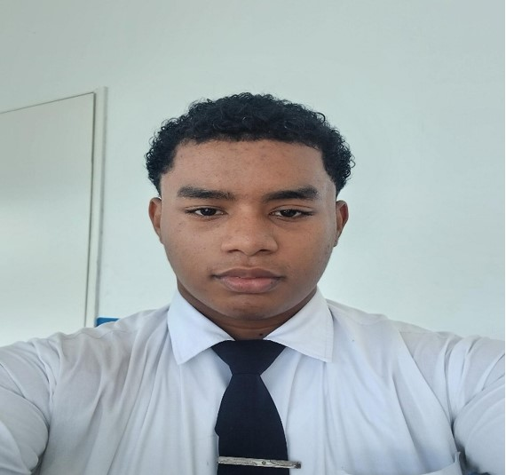

Hola soy Kevin Mendieta ,16 años nací en el Hospital del Niño en Panamá.
Tengo 2 hermanos y una hermana y estudio en el bachillerato en tecnología en el Instituto Fermín Naudeau . Me gusta mucho jugar ping pong, fútbol, volleyball.
Mi objetivo principal en estos momento es graduarme de 6to año y seguir seguir estudiando hasta convertirme en piloto de avión.
.Aparte de mis metas profesionales, también valoro mucho a mi familia, quienes me han apoyado en todo momento. Me esfuerzo por equilibrar mis estudios, mis intereses deportivos y el tiempo que paso con ellos.